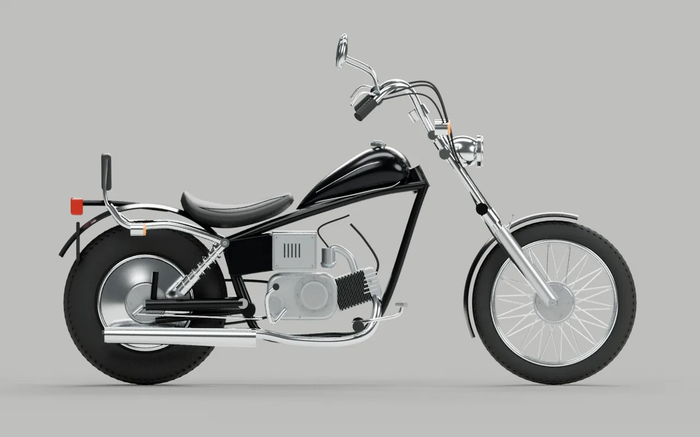

FORM STUDY / 01
HONDA
JAZZ
3D ビジュアル・プロトタイプ

確認用の静止画です。3D対応のブラウザで開くと、回転・タイヤ調整・外観変更が使えます。
BLACK / CHROME
ノーマル仕様のシルエットを確認するための初期モデル
STATIC PREVIEW / 静止画
形状確認用の自作3Dモデルです。写真の再現を目指した近似で、精密CADや完成版ではありません。ホイールベース 1,325 mm・リム 16 / 12 inch はHonda公表値。タイヤ外径・各部形状は写真からの近似です。
この表示画面では JavaScript が動作していないため、静止画のみ表示しています。